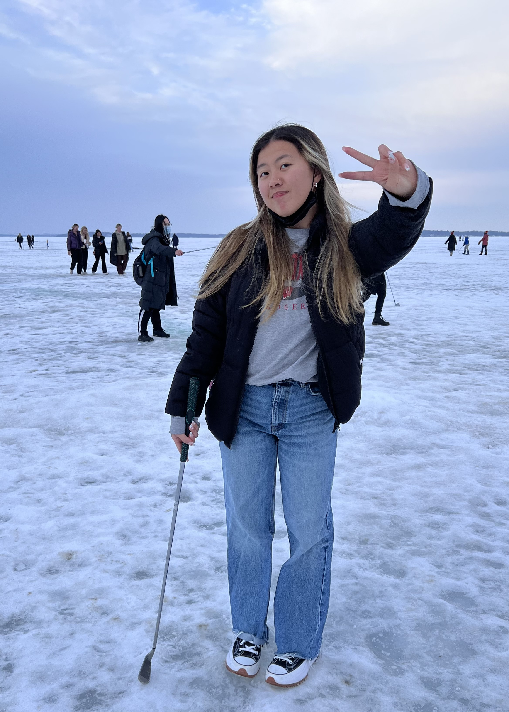

Hi! My name is Lucinda Kue and I'm a second year here at UW-Madison.
Fashion has always been a big part of my life and a big outlet to getting to express my creativity.
I got super into fashion my freshman year of college and have been documenting my outfits since.
I decided to create this webpage to document my fashion and be a way for others and myself to get inspiration
on fashion and for outfits! I hope you enjoy my outfits and are able to find a way to express yourself through fashion as well! To follow my life style and see the outfits I wear on a daily, follow my Instagram. :)